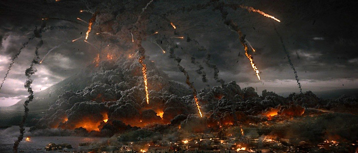
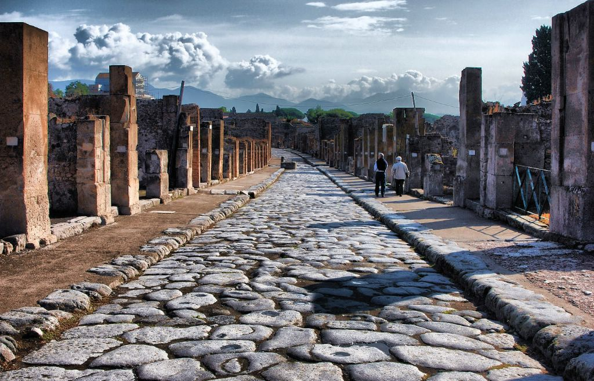
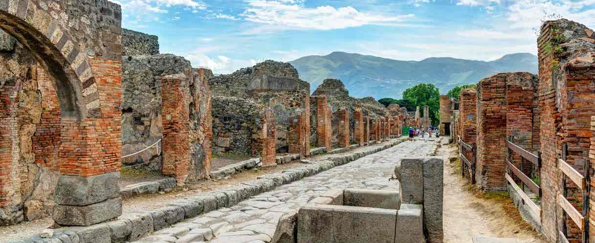

Помпеи – погребенный город
Извержение вулкана Везувий: гибель города
Примерно за 80 лет до извержения Везувий посетил географ Страбон. Ученый написал, что почти до самой вершины вулкан покрыт цветущими полями. Только сама пепельная вершина напоминала, что это место когда-то извергало огонь.
Везувий заявил о своем пробуждении в 63 г. н. э. землетрясением. Оно разрушило несколько городов в Помпеях, Геркулануме и Неаполе. Некоторые из них так и не восстановили за 16 лет [1].
В день катастрофы в помпейский амфитеатр стекались люди, желавшие посмотреть на бои гладиаторов.
Извержение началось во второй половине дня. В небо было выброшено огромное облако раскаленного пепла. Тепловая энергия в разы превосходила энергию, выделенную при бомбардировке Хиросимы. Облако из камней, пепла и дыма достигало высоты 33 км. Западная часть вулкана взорвалась и свалилась в расширившийся кратер [3].
Древнеримский писатель Плиний Старший, занимавший в 79 г. пост командующего галерным флотом в Мизене на берегу Неаполитанского залива, с началом извержения направился в Стабии. Его племянник Плиний Младший писал, что ученым двигали желание спасти людей из города и научное любопытство. Также Плиний Старший приказал записывать все изменения, которые происходят в облаке. Прибыв в Стабии через несколько часов, он не смог их покинуть из-за начавшегося отлива. Успокаивая перепуганных жителей и ожидая изменения условий на море, Плиний Старший умер. По одной из версий, причиной его гибели стали сернистые испарения.
Из писем Плиния Младшего известно, что катастрофа развивалась в течение продолжительного времени. Плиний Старший, например, погиб ночью более чем через сутки после начала извержения.
Их этого можно сделать вывод, что катастрофа не была молниеносной. Выпадение пепла, хоть и затрудняло дыхание и осложняло передвижение по городу, все-таки не являлось фатальным явлением. Все, кто смог оценить нависшую угрозу, стали стремительно покидать города, оказавшиеся в опасности. Но далеко не все могли объективно оценить степень опасности [3].
Часть жертв извержения, уже покинув город, остались от него в опасной близости. Они погибли от отравления газами, выделившимися во время буйства Везувия. Погибли те, кто решил остаться и пересидеть катастрофу в домах, и те, кто слишком поздно решил бежать. Их ноги застревали в пемзе, а потом их добил дождь из пепла и воды. Некоторые помпейцы побежали в гавань, но кораблей либо не было, либо они уже были выведены из строя пеплом и камнями [1].
По мнению исследователей, фатальный удар по Помпеям и Геркулануму нанесли пирокластические потоки – смесь высокотемпературных (до 800 градусов Цельсия) вулканических газов, пепла и камней, способных развивать скорость до 700 км/час. Именно пирокластические потоки стали причиной гибели большинства людей, оставшихся в Геркулануме.
Однако потоки эти обрушились на города не ранее чем через 18–20 ч с момента начала катастрофы. Все это время у жителей города была возможность избежать гибели, которой, очевидно, большинство воспользовалось.
После первого удара последовала вторая волна пирокластических потоков, которая довершила дело. Помпеи и Стабии оказались под слоем пепла и пемзы глубиной в 8 м, в Геркулануме слой пепла, камней и грязи составил около 20 м. Огромные массы пепла и пирокластические потоки «законсервировали» города и тех, кто в них остался, в том состоянии, в каком они находились в момент гибели [3].
Когда извержение закончилось, уцелевшие помпейцы отправились в свой город. Они не могли попасть в свои дома, потому что город был засыпан пеплом. Они проламывали крыши, спускались в жилища, чтобы забрать деньги и ценности, которые могли пригодиться им при переселении. При раскопках ученые Нового времени нашли в домах мало денег и предметов домашней утвари.
Император Тит направил в Кампанию сенатскую комиссию. Они должны были оценить ущерб и организовать восстановление городов. Имущество погибших горожан, не имевших наследников, должно было пойти на восстановление Помпей. Но ничего сделано не было[1].
Установить точное число жертв катастрофы весьма сложно, ибо называются числа разного порядка. Но, по современным оценкам, скорее всего из 20 тысяч жителей города Помпеи погибло около двух тысяч. В Стабиях и Геркулануме число погибших было меньше в силу того, что сами они были значительно меньше Помпеев [3].
Ученые установили, что Везувий минимум 80 раз уничтожал поселения на прилежащих к нему территориях
Последнее серьезное извержение Везувия случилось в 1944 г., когда были уничтожены два города: Сан-Себастьяно и Масса [6].
Таким образом, Помпеи погибли в результате извержения вулкана, а выжившие жители не вернулись в город.
Галерея